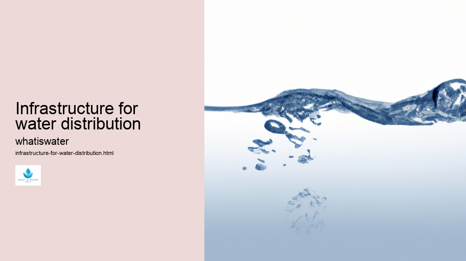

Hydrological Cycle
Hydrological Cycle
Evaporation and transpiration
Condensation and cloud formation
Precipitation and rain patterns
Surface runoff and river systems
Groundwater flow and aquifers
Snowmelt and glacial processes
Water storage in oceans lakes and reservoirs
Soil moisture and infiltration
Water balance and budgeting
Human impact on the hydrological cycle
Marine Ecosystems
Marine Ecosystems
Coral reefs and their biodiversity
Mangrove forests as coastal protectors
Ocean currents and climate regulation
Deepsea habitats and extremophiles
Intertidal zones and estuarine ecosystems
Marine food webs and trophic levels
Freshwater Ecosystems
Freshwater Ecosystems
Conservation efforts for marine species
Marine biogeochemical cycles
Impact of global warming on oceans
Water Resource Management
Water Resource Management
Rivers streams and creeks ecosystems
Lakes ponds wetlands habitats
Biodiversity in freshwater environments
Aquatic plants role in oxygenation
Freshwater fish species diversity
Invasive species impact on freshwater systems
Pollution threats to freshwater sources
Conservation strategies for freshwater biomes
Role of wetlands in flood control
Importance of riparian buffers
Cultural Significance of Water
Cultural Significance of Water
Sustainable water use practices
Desalination technologies for fresh water supply
Wastewater treatment processes
Rainwater harvesting techniques
Management of water during drought conditions
Transboundary water resource politics
Infrastructure for water distribution
Agricultural irrigation efficiency
Urban water demand management
Impact of climate change on water resources
About Us
Contact Us

Infrastructure for water distribution
Hydrogeology
Water distribution infrastructure is the foundational framework that ensures the delivery of an essential resource—water—to homes, businesses, and industries across towns, cities, and rural areas. This complex network comprises various components such as pipes, pumps, reservoirs, treatment facilities, and meters.
Rainwater Harvesting
Together, these elements work in harmony to provide clean and safe water for consumption and usage while also addressing wastewater and stormwater management.
The design of this infrastructure must account for numerous factors including geography, population density, demand cycles, climate considerations, and environmental regulations. Engineers face a multitude of challenges to balance efficiency with sustainability; they aim not just to meet current needs but also anticipate future demands due to population growth or changing weather patterns.
One critical component within water distribution systems is the pipeline network. These pipelines carry treated water from purification plants to consumers. They are constructed using materials selected for durability and safety such as ductile iron or polyethylene.
Infrastructure for water distribution - Rainwater Harvesting
Climate Change and Water
Water Law and Policy
Rivers and Lakes
Over time though even the sturdiest materials can degrade due to corrosion or external pressures leading potentially to leaks or bursts which can disrupt supply.
To maintain consistent quality control over this vital resource water undergoes extensive treatment before reaching taps.
Infrastructure for water distribution - Water Law and Policy
Water Law and Policy
Rivers and Lakes
Water Cycle
Aquaculture
Water Efficiency
Hydroelectric Power
Treatment processes remove contaminants like bacteria chemicals or other pollutants ensuring that what arrives at endpoints meets stringent health standards set by regulatory bodies.
Hydrogeology
Distribution networks also encompass sophisticated monitoring systems designed to detect any irregularities in flow pressure or composition indicating possible issues within the system allowing for quick intervention when needed. Furthermore advanced metering technologies provide valuable data regarding usage trends helping utilities optimize operations conserve resources prevent wastage.
Investment in modernizing aging infrastructure is paramount not only for reliability but also resilience against natural disasters which could compromise service continuity.
Infrastructure for water distribution - Hydrogeology
Rivers and Lakes
Water Cycle
Aquaculture
Water Efficiency
With climate change posing increased risks from droughts floods storms it's imperative that our water distribution frameworks are robust enough withstand such events without compromising public health safety.
In conclusion effective water distribution infrastructure signifies more than just laying down pipes connecting sources destinations rather it embodies careful planning engineering foresight adaptability all directed towards guaranteeing uninterrupted access life-giving element we know as H2O.
Hydrological Cycle
Check our other pages :
Water Resource Management
Agricultural irrigation efficiency
Impact of climate change on water resources
Frequently Asked Questions
What is the purpose of water distribution infrastructure?
Water distribution infrastructure serves to deliver potable water from treatment plants or natural sources to residential, commercial, and industrial users. It ensures that communities have consistent access to clean and safe water for various uses such as drinking, cooking, cleaning, and irrigation.
How does water distribution infrastructure work?
Water distribution systems typically include a network of pipes, pumps, valves, storage tanks, and meters. The system begins at the water treatment facilities where raw water is treated to meet safety standards. From there, the treated water is pumped into large-diameter transmission mains that carry it across long distances. Smaller-distribution pipes branch off from these mains to deliver water into homes and businesses. Throughout this process, pressure is maintained to ensure steady flow and prevent contaminants from entering the system.
What materials are used in constructing water distribution networks?
Common materials used for pipes in water distribution systems include ductile iron, PVC (polyvinyl chloride), steel, concrete, and sometimes HDPE (high-density polyethylene). These materials are chosen based on their durability, resistance to corrosion or leakage, cost-effectiveness, and suitability for local soil conditions.
What challenges do modern water distribution infrastructures face?
Modern water distribution infrastructures face numerous challenges including aging pipelines leading to leaks or bursts; increased demand from population growth; contamination risks due to backflow or system breaches; climate change impacts such as droughts or flooding affecting supply; and funding constraints limiting maintenance or upgrades. Theres also a need for incorporating smart technologies for better monitoring and management.
How can sustainability be integrated into water distribution infrastructure?
Sustainability can be integrated through measures like adopting energy-efficient pumping systems; implementing leak detection technologies to minimize waste; using advanced metering infrastructure (AMI) for accurate billing and conservation incentives; promoting rainwater harvesting and graywater reuse in urban planning; ensuring proper maintenance schedules; upgrading old pipelines with more durable materials; and developing policies that support sustainable practices throughout the entire lifecycle of the infrastructure.